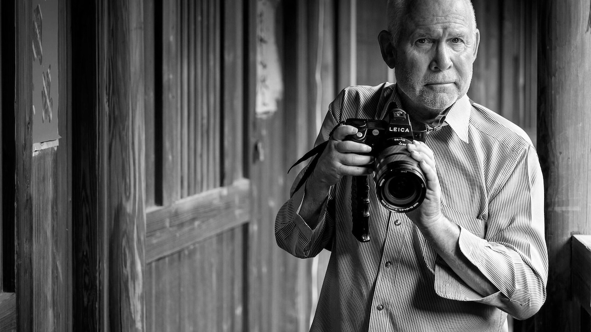

Steve McCurry: Objektifin Ardındaki Hikâye Anlatıcısı

Fotoğraf dünyasında bazı isimler vardır ki yalnızca görüntü üretmez, aynı zamanda insanlığın ortak hafızasına iz bırakır. Steve McCurry, işte bu isimlerin başında gelir. Özellikle “Afgan Kızı” fotoğrafıyla hafızalara kazınan McCurry, savaşın, göçün, kültürlerin ve insan hikâyelerinin en güçlü görsel anlatıcılarından biridir.
Bu yazıda Steve McCurry’nin hayatını, kariyerini, fotoğraf anlayışını ve fotoğrafçılık dünyasına bıraktığı mirası detaylı şekilde inceleyeceğiz.
Erken Yaşamı ve Eğitimi
Steve McCurry, 23 Şubat 1950’de ABD’nin Philadelphia kentinde doğdu. Sanata olan ilgisi genç yaşlarda ortaya çıktı. Üniversite eğitimini Pennsylvania State University’de sinema ve tiyatro üzerine aldı. Bu eğitim, onun görsel anlatım becerisinin temelini oluşturdu.
Üniversite sonrası kısa süre yerel bir gazetede çalıştı; ancak masa başı gazetecilik ona göre değildi. Dünyayı keşfetme arzusu ağır basınca, eline fotoğraf makinesini alıp serbest fotoğrafçı olarak yola çıktı.
Kariyerinin Dönüm Noktası: Afganistan
McCurry’nin kariyerindeki en kritik kırılma noktası 1979’da yaşandı. Sovyetler Birliği’nin Afganistan’ı işgali sırasında, sınırı gizlice geçerek savaşın içinden fotoğraflar çekti. Bu cesur girişim, onun uluslararası tanınırlığını başlatan adım oldu.
Çektiği fotoğraflar, özellikle National Geographic dergisinde yayımlandığında büyük yankı uyandırdı. Bu çalışma ona prestijli Robert Capa Gold Medal ödülünü kazandırdı.
McCurry artık yalnızca bir fotoğrafçı değil, savaş bölgelerinin güçlü görsel tanığıydı.
“Afgan Kızı”: Bir Fotoğrafın Efsaneye Dönüşü
1984 yılında Pakistan’daki bir mülteci kampında çektiği portre, fotoğraf tarihinin en ikonik karelerinden biri oldu. Yeşil gözleriyle objektife bakan genç kızın fotoğrafı, 1985’te National Geographic kapağında yayımlandı.

Bu fotoğrafın öznesi, yıllar sonra Sharbat Gula olarak kimliklendirildi.
Bu fotoğraf neden bu kadar etkiliydi?
- Güçlü göz teması
- Savaşın insani yüzünü göstermesi
- Evrensel duygu taşıması
- Kusursuz renk ve kompozisyon
“Afgan Kızı”, yalnızca bir portre değil; savaşın masumiyet üzerindeki etkisinin sembolü hâline geldi.
Fotoğraf Anlayışı ve Tarzı
Steve McCurry’nin fotoğraflarını diğerlerinden ayıran belirgin özellikler vardır:
1. İnsan Odaklı Anlatım
McCurry için mekân değil, insan hikâyesi merkezde yer alır. Portrelerindeki bakışlar izleyiciyle doğrudan bağ kurar.
2. Renk Kullanımı
Özellikle doygun ve zengin renk paleti, onun imzası hâline gelmiştir. Renkler fotoğraflarında yalnızca estetik değil, anlatısal bir araçtır.
3. Sabır ve Doğru An
McCurry, “mükemmel an”ı bekleyen fotoğrafçılardandır. Kadrajlarında çoğu zaman doğal ve kurgusuz anlar bulunur.
4. Kültürel Derinlik
Hindistan’dan Afganistan’a, Güneydoğu Asya’dan Afrika’ya kadar geniş bir coğrafyada çalışmıştır. Fotoğrafları kültürel çeşitliliği güçlü biçimde yansıtır.
Dünyanın Dört Bir Yanında Bir Fotoğrafçı
McCurry kariyeri boyunca sayısız ülkede çalıştı. Özellikle şu bölgelerdeki projeleriyle tanındı:
- Afganistan
- Pakistan
- Hindistan
- Myanmar
- Tibet
- Afrika ülkeleri
- Orta Doğu
Bu coğrafyalarda savaş, göç, günlük yaşam ve kültürel ritüeller üzerine etkileyici görsel hikâyeler üretti.
Tartışmalar ve Eleştiriler
Steve McCurry’nin kariyeri tamamen tartışmasız değildir. 2016 yılında bazı fotoğraflarında dijital manipülasyon yapıldığı ortaya çıktı. Bu durum belgesel fotoğrafçılık etiği açısından eleştirildi.
McCurry ise zamanla kendisini daha çok “görsel hikâye anlatıcısı” olarak tanımladığını ve katı foto-muhabirlik çizgisinde olmadığını ifade etti. Bu olay, fotoğraf dünyasında “belgesel mi, sanat mı?” tartışmalarını yeniden alevlendirdi.
Kitapları ve Sergileri
Steve McCurry, kariyeri boyunca birçok önemli fotoğraf kitabına imza attı. Bunlardan bazıları:
- The Imperial Way
- Portraits
- India
- In the Shadow of Mountains
- Untold: The Stories Behind the Photographs
Dünyanın pek çok büyük şehrinde sergiler açtı ve çalışmaları müzelerde yer aldı.
Fotoğraf Dünyasına Etkisi
Steve McCurry’nin etkisi yalnızca çektiği karelerle sınırlı değildir. O, modern fotoğrafçılığa şu katkıları yaptı:
- Renkli belgesel fotoğrafın popülerleşmesi
- İnsan odaklı görsel hikâyeciliğin güçlenmesi
- Kültürler arası empatiyi artıran görsel dil
- Fotoğrafın duygusal gücünü ön plana çıkarma
Bugün pek çok fotoğrafçı, özellikle portre ve belgesel alanında McCurry’nin görsel dilinden ilham almaktadır.
Sonuç: Bir Fotoğraftan Fazlası
Steve McCurry, yalnızca güçlü kareler üreten bir fotoğrafçı değildir. O, dünyanın farklı köşelerindeki insanların hikâyelerini görünür kılan bir anlatıcıdır. Objektifi, savaşın ortasında kalan çocukları, uzak coğrafyalardaki gündelik hayatı ve insanlığın ortak duygularını bize taşır.
“Afgan Kızı” ile hafızalara kazınan McCurry, fotoğrafın sadece bir görüntü değil; zamanın ruhunu yakalayan güçlü bir anlatım biçimi olduğunu kanıtlamıştır.